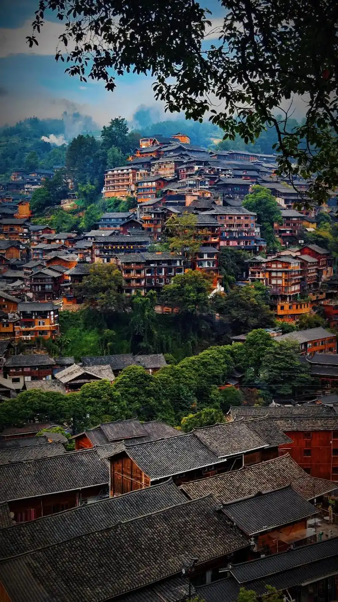
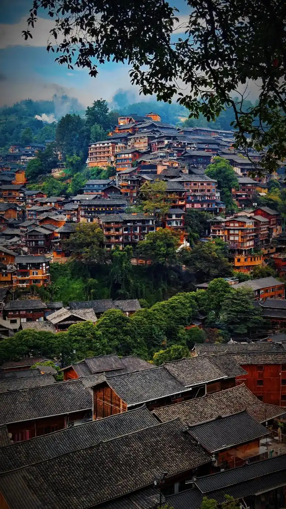

我的家乡 - 贵州
贵州省位于中国西南部，是一个山川秀丽、气候宜人、民族众多、资源富集、发展潜力巨大的省份
贵州简介
山水贵州
贵州素有"八山一水一分田"之说，多样的地貌造就了丰富的自然景观。这里气候温和湿润，属亚热带湿润季风气候，年平均气温15℃左右，是理想的避暑胜地。
作为中国唯一没有平原支撑的省份，贵州的山地风光独具特色。黄果树瀑布、荔波小七孔、梵净山等自然景观闻名中外，吸引着无数游客前来观光游览。
多彩贵州
贵州是一个多民族聚居的省份，有苗族、布依族、侗族等18个世居少数民族。各民族独特的风俗习惯和民族文化，使贵州的文化景观更加丰富多彩。
民族节日"四月八"、"六月六"等充满了浓郁的民族风情，苗族的银饰、侗族的鼓楼和大歌都是贵州宝贵的文化遗产。
 

贵州特色
自然景观
黄果树瀑布是中国最大的瀑布，荔波小七孔被誉为"地球腰带上的绿宝石"，梵净山是世界自然遗产，这些景观展现了贵州独特的喀斯特地貌。
民族文化
贵州有18个世居少数民族，各民族保留了独特的语言、服饰、建筑和节日，如苗族的银饰制作、侗族的大歌和鼓楼建筑技艺。
特色美食
贵州美食以酸辣为主，酸汤鱼、肠旺面、丝娃娃等特色小吃闻名遐迩，茅台镇的茅台酒更是中国名酒，被誉为"国酒"。
气候环境
贵州气候温和湿润，年平均气温15℃左右，夏季凉爽，冬季温暖，空气质量优良，是理想的宜居和避暑胜地。
民族文化
多彩的民族风情
贵州是一个多民族聚居的省份，各民族在长期的历史发展过程中，形成了各具特色的民族文化和风俗习惯。这些文化不仅是贵州的宝贵财富，也是中华文化的重要组成部分。
民族节日是民族文化的重要表现形式，贵州的民族节日丰富多彩，有苗族的"四月八"、布依族的"六月六"、侗族的"花炮节"等，每个节日都充满了浓郁的民族风情。
特色文化元素
- 苗族银饰：精美的银饰制作技艺，具有极高的艺术价值
- 侗族大歌：无伴奏多声部合唱，被列入世界非物质文化遗产
- 苗族蜡染：传统印染技艺，图案精美，具有独特的民族风格
- 侗族鼓楼：木质结构建筑，是侗族文化的重要象征
- 苗族吊脚楼：适应山地环境的特色民居建筑

我与家乡的联系
贵州的山水养育了我，多彩的民族文化熏陶了我。虽然现在在外求学，但家乡的一切始终是我成长的根基。
每次回家，我都会被家乡的变化所震撼，从基础设施的完善到旅游业的发展，贵州正在越来越好。作为贵州人，我也希望能用自己的专业知识，为家乡的发展贡献一份力量。